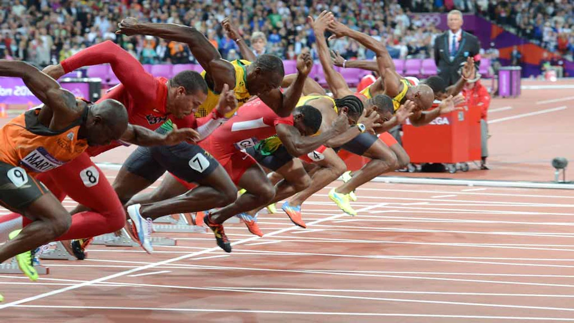
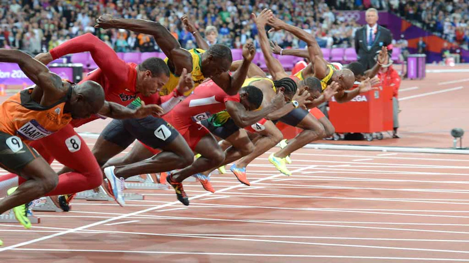

Sports Spot
Welcome to Sports Spot, the world greatest sport site on the internet.
See sport's news, stories, highlights, stats, blog and much more.
 


Watch this video on staying healthy for those who play sports
Check the top most desired sports year-by-year starting from 1920 to 2020